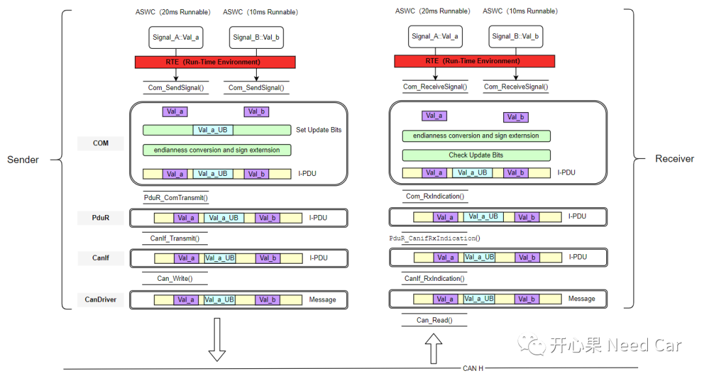
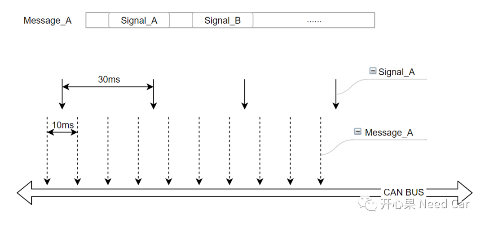
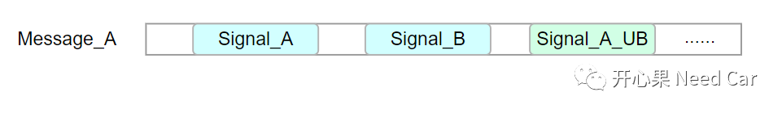
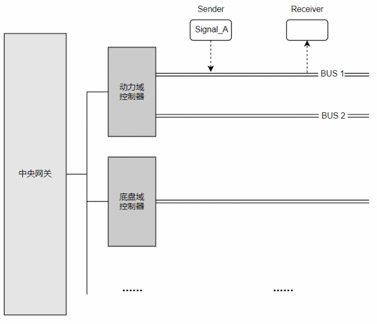
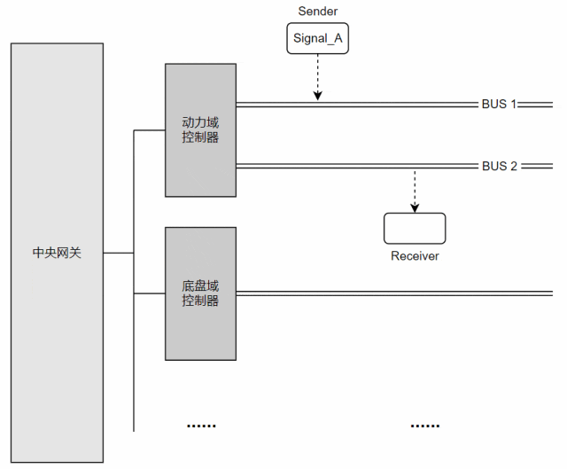
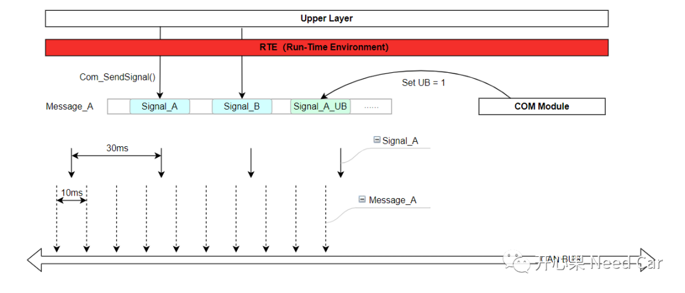
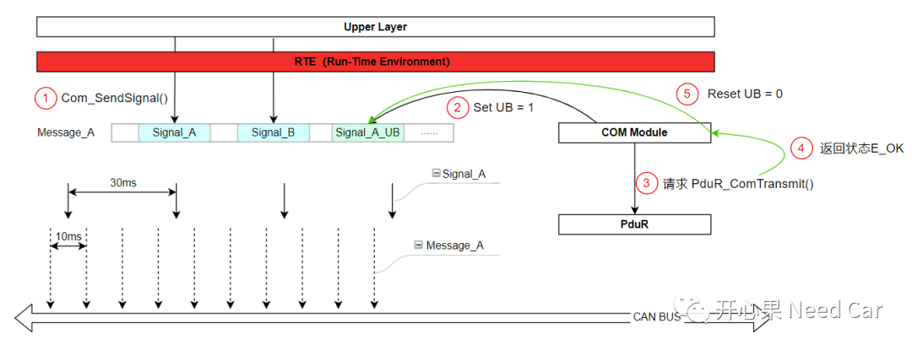
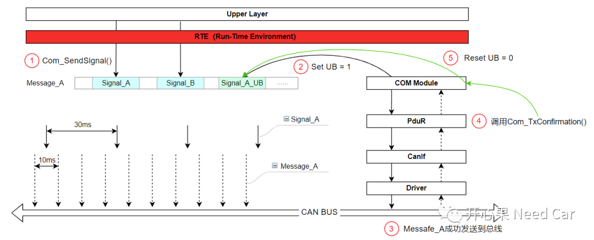
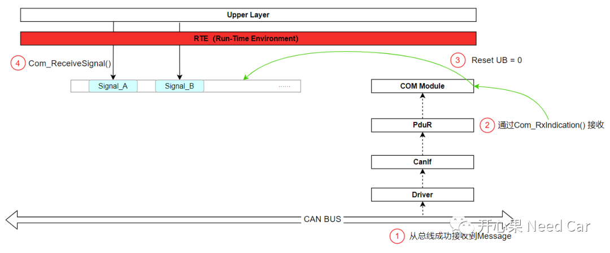
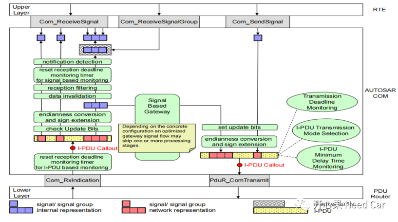

开心果 Need Car · 2023-09-28T07:04:00+08:00 · 微信原文
随着汽车智能化发展，整车通信矩阵越来越复杂，即：不同电控单元之间需要交互的信息越来越多，这些信息通过报文（Message）传输。在Autosar的软件分层架构中，Message在不同的软件层级会拆分出不同的形式，具体层级的表示，可以参考前文《Autosar通信栈：I-PDU、N-PDU、L-PDU，要掰扯清楚》。Message中携带的信号（Signal）最终要传递给软件的上层模块，参与算法处理，之后再将处理后的信息形成Signal发送出去。Autosar通信栈，简化示意如下：

1、UB概念
UB：表示发送端（Sender）所发送信号（Signal）/信号组（Signal Groups）数据是否有更新，如果发送端发送的Signal/Signal Groups有更新，由COM层自动置位对应的UB（=1），反之，复位UB（=0）。
为什么需要用UB位表示Signal/Signal Groups的数据有没有更新呢？假设如下场景，报文Message_A包含信号Signal_A、Signal_B等，Message_A的发送周期为10ms，而Signal_A的更新周期为30ms，示意如下：

面对如上的场景，接收端（Receiver）应当检测Sender是否更新过Signal_A的值，以便于Receiver更好的进行算法处理。因此，为了表示Signal/Signal Groups数据是否有更新，设计了UB，UB需要消耗Message中的资源。举例：设计Signal_A_UB信号用于表示Signal_A数据是否更新过。

由于UB需要消耗Message资源，因此，可以根据工程场景，对重要信号进行UB配置，对非重要信号，不配置UB，即：UB是一个选配项。同时，UB本身也是一个Signal。在如上的表述中，Sender和Receiver如何理解呢？

（二）跨网段Signal传输
如果Sender、Receiver在不同局域网内，两者之间的信号传输如下所示：

2、UB在发送端的处理
如果为某个信号配置UB时，需要思考两个问题：
1、何时置位发送端的UB位？
2、何时复位发送端的UB位？



3、TriggerTransmit模式复位UB
此种模式在工程中，不多见，本文不做过多讨论。
3、UB在接收端的处理
Receiver成功从总线接收到目标Message以后，驱动层通过Callback层层向上通知，直到COM模块收到Message，PduR模块通Com_RxIndication()接口将数据通知COM某块，示意如下：

其中，接收到的UB信息在Com_RxIndication()接口中进行处理，具体的处理如下所示：

（一）Receiver何时复位UB
Receiver处理收到的UB，需要与reception deadline monitor逻辑配合处理，即：如果信号deadline超时，则对应信号的UB位需要复位（=0）。reception deadline monitor属于选配项，如果信号没有配置reception deadline monitor，则接收端接收到的UB信号值会一直保持上次的接收值。
4、UB对应的工程问题
往期精彩回顾
Autosar EcuM：APP由RUN到POST_RUN浅析
UDS：Security Access service (0x27)，值得深聊